ㅤ
ㅤ
Campanha do Zero
Apesar de ser mais fisicamente mais forte que X, a gameplay de Zero é um pouco mais dificil, então se você está aqui pela primeira vez, recomendo que jogue com X primeiro, e depois venha experimentar jogar com Zero. Zero possui ataque e defesa base maiores que X, porem, não possui uma armadura propria, e no lugar da Buster, Zero luta com uma espada, sua Z-Saber, podendo atacar apenas fisicamente, diferente de X que ataca a distancia. Alem disso, a campanha de Zero conta com algumas cutscenes a mais quando comparadas a X, pois Zero na sua visão dentro do jogo, é mais participativo na historia, (levando em conta que esse é o primeiro jogo da franquia a termos Zero como um personagem selecionavel), tanto que, muitos consideram a gameplay de Zero como a verdadeira historia desse jogo
A campanha se inicia com Zero sonhando em sua capsula, tendo pequenos flashbacks de momentos passados de sua vida, como sua criação por Dr.Wille, e um confronto com Sigma. Zero então é acordado por um alarme soando na base, requesitando que ele vá ao QG dos Maverick Hunters. Chegando lá, Zero recebe a missão de investigar o que aconteceu em Sky Lagoon.
Sky Lagoon
Não há muito o que precisa ser dito aqui, Sky Lagoon é a fase tutorial do jogo. Apenas siga até o fim dela destruindo os inimigos com sua Z-Saber. Termine a fase e converse com o Magma Dragoon, completando o ato 1 da Sky Lagoon. No ato 2, continue seguindo, tomando cuidado com partes do teto que desabam e um buraco que se abre no chão (dentro do buraco há uma vida e um item de recuperar vida, não é necessario pega-los, apenas suba o mais rapido possivel antes de ser esmagado).
Ao fim do ato 2 de Sky Lagoon, Zero encontrará sua amiga, Iris caida no chão, que teria sofrido um ataque de um enorme dragão, Zero então toma a dianteira e parte para cima dele para salvar sua amiga, dessa forma, temos o primeiro boss do jogo, o Eregion. Apesar do tamanho, ele é bem fraco, apenas desvie dos golpes dele e o ataque com sua Z-Saber.
Derrotando o Eregion, você terá uma conversa com Colonel, que o agradece por ter salvo Iris, sua irmã mais nova. Em seguida, Zero diz a ele que a Repliforce está com suspeitas de serem aqueles que causaram esse ataque, pedindo-o que abaixe sua arma para conversarem, por sua vez, Colonel recusa, e diz que isso é algo inaceitavel, que prefere ser considerado um Maverick a ser investigado por algo que não fez, assim Colonel pega sua irmã e ambos vão embora. Em seguida começará a uma cutscene introduzinho a equipe da Repliforce, seus inimigos nesse jogo. Em seguida, Zero retorna a base e para sua surpresa, Iris teria te seguido. Ela implora para que você não lute com seu irmão, que tudo é um mal entendido, mas Zero diz que não pode contrariar as regras de seus superiores. Voce obtem as informações sobre os chefes das 8 fases do jogo. A partir desse ponto, você pode jogar as fases em qualquer ordem que queira, mas para aproveitamos as fraquezas dos chefes, usaremos a seguinte sequencia:
Volcano - Magma Dragoon
Após ter sido visto no incidente de Sky Lagoon e se escondido em um vulcão perto da região, Zero então decide procurar por seu antigo companheiro de equipe a fim de obter mais informações sobre o que aconteceu e porque ele parece estar envolvido em toda essa historia. Siga a fase tendo cuidado com as bolas de fogo que vem tanto de cima quanto do chão, elas são sua maior dificuldade nessa fase com poucos inimigos. Chegando no final, destrua o portão para chegar no ato 2
No ato 2 o esquema é parecido, pule pelas plataformas areas iniciais (usando o dash se preferir) enquanto desvia das bolas de fogo antes que elas se quebrem e continue a fase, tendo cuidado com os soldados dentro de armaduras roboticas e o veiculo com 2 lasers, eles tem muita vida e causam muito dano. Chegando perto do final da fase, você verá uma armadura robotica vazia, entre dentro dela e termine a fase pela parte de baixo, essa armadura não toma dano da lava, apenas das bolas de fogo. Atravesse o rio de lava derrotando os dois soldados com armadura tomando o menor dano possivel, pois assim que você encontrar Magma Dragoon, ele se recusará a responder suas perguntas e vai começar a lutar contra Zero. enquanto você ainda estiver na armadura, cause o maior dano que você conseguir nele, sem se preocupar em desviar dos ataques deles. Caso a armadura seja destruida, finalize ele usando sua Z-Saber, e não caia na lava, ela te mata hit-kill. Ao ser derrotado, antes de morrer, Dragoon diz que apenas fez tudo isso (ele é o principal responsavel pela queda de Sky Lagoon), porque alguem lhe prometeu poder em troca, poder que seria suficiente para ele ser mais forte que o proprio Zero, ao qual sempre teve inveja. Antes de seus suspiros finais, Magma Dragoon se desculpa com seu amigo, mostrando arrependimento por suas escolhas.
Com Magma Dragoon derrotado, você receberá uma nova arma, a Ryuuenjin. Com ela você sua Z-Saber dispara um golpe de fogo na vertical/diagonal. Para usa-la, aperte o botão de arma especial e o direcional/analogico para cima, essa arma será excencial nessa jogatina, pois praticamente metade dos inimigos da campanha são fracos contra ela. Diferente das armas de X, os upgrades da Z-Saber de Zero não gastam munição especial (por excessão de 1 unico dos 8 upgrades).
Snow Base - Frost Walrus
Logo no começo da fase, após cair num buraco e subir uma escadinha de gelo, você verá um bloco de gelo
acima da sua cabeça. Use sua Ryuuenjin para destruir o gelo e um Heart Tank  cairá e será coletado.
cairá e será coletado.
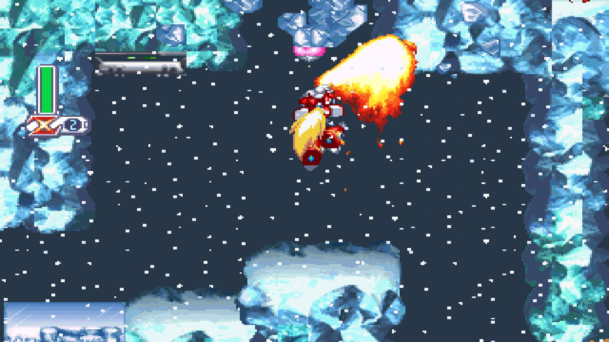
Continue seguindo na fase, corra o mais rapido possivel nas pontes de gelo para não cair nos espinhos, e desça com calma as plataformas de gelo para chegar na entrada a direita da enorme queda, chegando no mini-chefe da fase
O mini-chefe possui um padrão de ataque bem simples, use a Ryuuenjin para ataca-lo enquanto seu nucleo estiver a mostra, acertando em cheio, de 3 a 5 ataques são o suficiente para derrota-lo.
No ato 2, após quebrar os pedaços de gelo no inicio da fase que te levam a uma pequena descida, passe
pela parte de cima da fase, quebrando todos os blocos de gelo, lá estará o seu
Weapon Tank 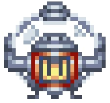,
. Vale lembrar, que para todos os itens que X e Zero possuem em comum (No caso, os 8 Heart Tanks ,
2 Energy Tanks
,
2 Energy Tanks e o Weapon Tank
, eles estarão nos exatos mesmos lugares
nas fases).
e o Weapon Tank
, eles estarão nos exatos mesmos lugares
nas fases).
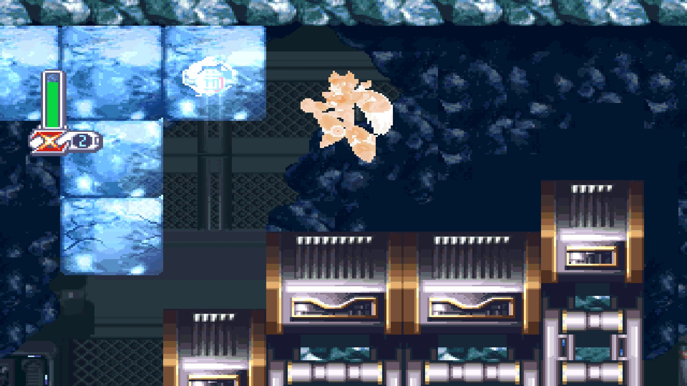
Prossiga o resto da fase derrotando os inimigos e tendo cuidado para não cair no limbo, a quantidade de inimigos nessa fase é enorme, mas são apenas inimigos comuns, os ataque com sua Z-Sabe e destrua-os com um ou dois golpes. Fazendo isso, chegamos até o boss dessa area, Frost Walrus, o boss mais fraco desse jogo. Use a Ryuuenjin, se aproxime de Frost Walrus e o ataque, ele tomará um dano severo e cairá no chão queimado, enquanto se arrasta para cima de você. Faça um wall jump na parede que ele está indo e com o dash pule por cima dele antes dele acertar a parede, em seguida, só repetir esse processo. Com metade da vida, em algumas ocasioes ele vai ficar parado conjurando um enorme pedaço de gelo, acerte-o o maximo que puder e use o dash para desviar dos pedaços de gelo que vão cair. Com Frost Walrus derrotado, Zero receberá a Hyouretsuzan. Essa arma ataca com uma estaca de gelo usando o botão de arma especial + o direcional/analogico para baixo.
Marine base - Jet Stingray
Essa fase é diferente das demais fase do jogo. Nela, X ou Zero estão em sua moto de combate e atravessam a
fase inteiramente montados nela nos 2 atos. Seu objetivo aqui é atirar nos inimigos e evitar bombas e buracos até chegar ao
fim da fase. O veiculo corre automaticamente, mas você pode usar os direcionais/analogicos para se mover mais para frente ou
para trás, alem de conseguir usar o dash. No primeiro ato, quando o terceiro buraco aparecer, não pule, apenas movimente a moto
para frente, você cairá em uma plataforma mais abaixo e coletará um Heart Tank  .
.
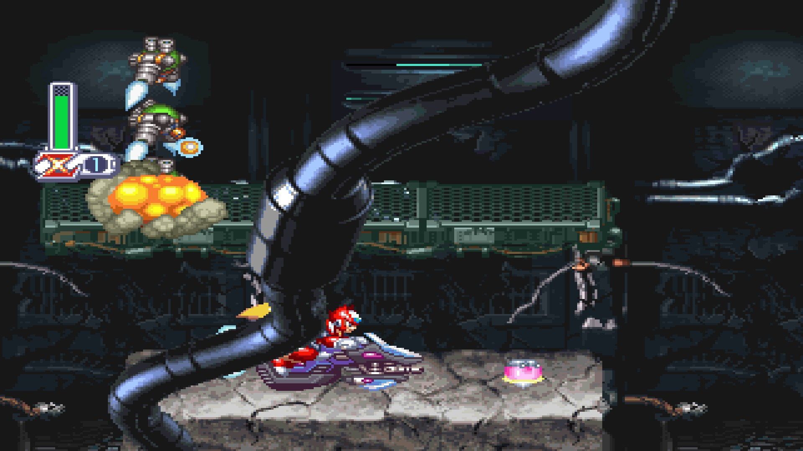
No segundo ato, faça a mesma coisa que no primeiro, porem agora não existem mais buracos para cair, mas sim
paredes para você bater. Na sexta e ultima grande rampa da fase, quando subir nela, dê um pulo para chegar em uma plataforma
area pequena, e em cima dela dê um pulo com dash para acessar outra plataforma ainda mais alta, quebrando duas caixas e coletando
um Energy Tank  .
Um Energy Tank consegue armazenar vida que você possa encher seu HP durante uma fase, ele é extremamente util para batalhas contra
bosses, existem 2 deles para você coletar.
.
Um Energy Tank consegue armazenar vida que você possa encher seu HP durante uma fase, ele é extremamente util para batalhas contra
bosses, existem 2 deles para você coletar.
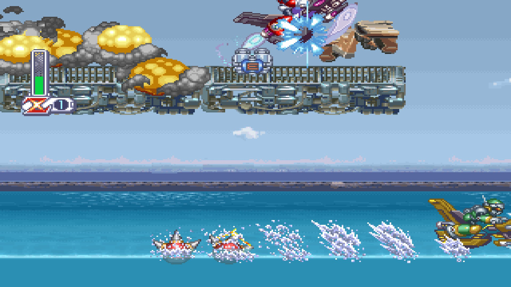
Ao fim do ato 2, terá um item para recuperar seu HP o esperando, assim você entrará na sala do boss, Jet Stingray com a barra de HP cheia. Fique ao lado contrario ao que Jet estiver, mas não muito proximo da parede, deixe-o lançar os pequenos inimigos azuis e mate os que conseguir com a Z-Saber, ficando atento a Jet. Pouco depois dele lançar os 4 bichinhos, ele dará um dash em direção a Zero. Pule por cima dele, e, quando ele estiver abaixo de Zero, com direcional/analogico para baixo e o botão de arma especial, use a Hyouretsuzan nele, assim o congelando (aproveite o congelamento para eliminar os bichinhos ainda vivos). As vezes, ao inves do dash, após lançar os bichinhos azuis ele vai tentar puxa-lo com um vendaval horizontal, se deixe ser puxado, e quando estiver praticamente encostando no Jet, mas sem receber dano, use a Hyouretsuzan nele. Quando Jet estiver com pouco HP, a parte dificil da luta começa (e na campanha de Zero, eu o considero o mais dificil dos 8 bosses somente por conta da parte final de sua fase). Os bichinhos azuis que eram lançados na parede são substituidos por vermelhos que seguem Zero, tornando muito dificil os matar e ainda pular por cima do dash de Jet Stingray, e alem disso, ele começará a dar dashs verticais no centro do mapa, desvie dele quando ele o atacar de cima para baixo, vá ao centro do mapa e use a Hyouretsuzan quando ele começar a aparecer no mapa, assim o congelando e causando dano, alem de cancelando o dash vertical de baixo para cima. Esse ultimo ato de Jet Stingray é bem complicado, então varias tentativas serão necessarias para aprender a pegar os movimentos dele. Utilizar o Energy Tank que acabamos de pegar é muito recomendavel. Quando Zero enfim conseguir derrota-lo, você ganhará o upgrade Hienkyaku. Com esse upgrade, Zero agora é capaz de usar seu Dash enquando estiver no ar.
Cyberspace - Cyber Peacock
Nessa fase, seu objetivo principal será conclui-la o mais rapido possivel. Dentro do ato 1, existem três partes onde uma especie de Scanner
irá escanear Zero, quando isso acontecer, CORRA o mais rapido possivel para o fim da fase, use e abuse de dashs e wall-jump, e simplesmente ignore os inimigos,
principalmente porque as bolas amarelas possuem um HP altissimo, são dificeis de destruir, e caso te peguem, tiram muito HP e gastam seu tempo. Depois que o
Scanner analisa Zero, por de trás dos panos um contador começa, e demorando do tempo que você levar para atravessar o portal, você ganha um rank de D a S.
Conseguindo rank S ao atravessar os portais, Zero ganha alguns itens. No primeiro portal, uma vida extra, no segundo portal, um Heart Tank  ,
e no terceiro, um Energy Tank
,
e no terceiro, um Energy Tank 
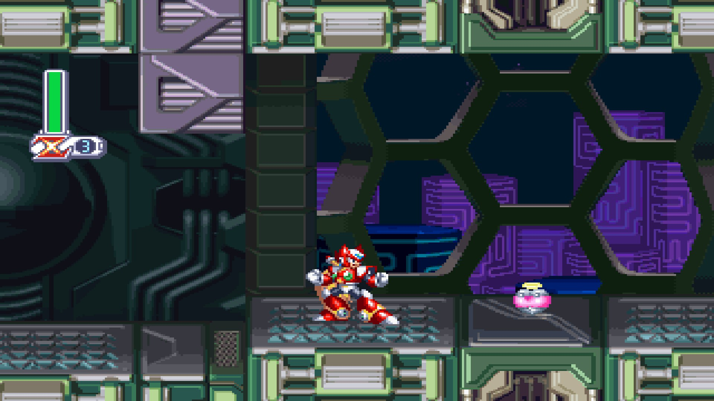 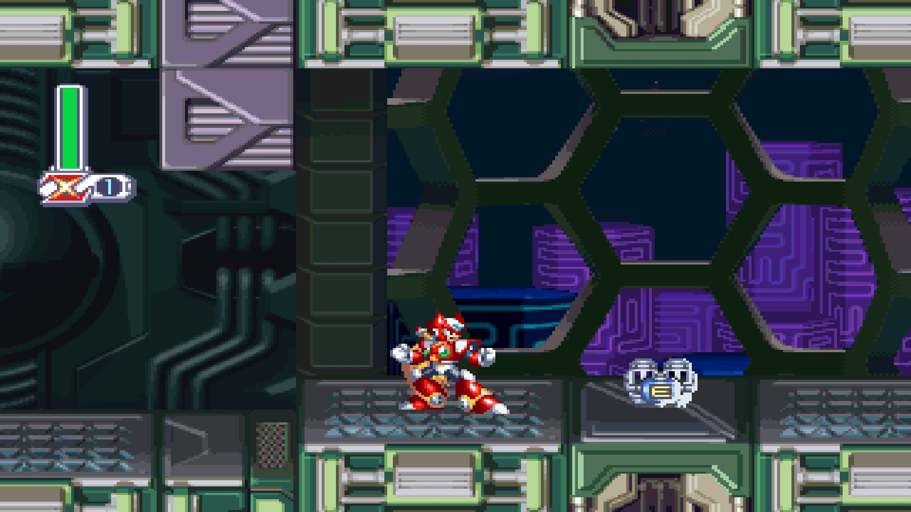
O Ato 2 não é muito complicado, apenas utilize dos botões que invertem a gravidade da sala para abrir caminho com as esferas gigantes e continue avançando na fase. Chegando no boss, Cyber Peacock, use a Ryuuenjin para ataca-lo assim que ele aparecer. Fique correndo de um lado para o outro (pois se ficar parado, ele teleporta para onde voce está e causa dano), e quando Peacock aparecer, o ataque com a Ryuuenjin, ele vai bugar e sumir. Quando estiver com pouco HP, caso você nao o acerte com dano efetivo, Cyber Peacock abrirá suas asas para atingi-lo se estiver perto, ou mandará tiros teleguiados. Derrotando Peacock, Zero recebe a Rakuhouha, sua unica arma com munição. Com ela, você atira 9 esferas de fogo em direção ao inimigo.
Colonel - Luta 1
Após derrotar 4 dos 8 bosses, independente de quais, Iris dirá a Zero que Colonel o enviou uma mensagem, chamando ele para um combate. Zero aceita e então a batalha entre os dois começa. Diferente de X, onde aqui temos uma luta contra Colonel, ao jogar com Zero, a luta é substituida por uma cutscene, onde Zero e Colonel começam a brigar, mas Iris aparece e interrompe os dois, implorando para que parem. Colonel diz que dessa vez irá recuar, em agradecimento por salvar sua irmã em Sky Lagoon, mas que na proxima vez, eles lutarão sem mais interrupções, onde só um deles sairá vivo
Flying Base - Storm Owl
Com Zero, essa fase é mais facil que utilizando X, pois sua Z-Saber alcança os canhões mesmo estando abaixo dele. Vá passando a fase enquanto destroi os canhões,
plataformas areas azuis que são inimigos disfarçados e os inimigos menores que pulam em você. Caso você queira, pode sair usando o pulo com dash para pular por cima dos inimigos,
ou utilizar a armadura voadora que está no cenario para te auxiliar. Na fase possuem alguns enormes canhões verticais que carregam um enorme tiro laser vermelho e destroem a plataforma
abaixo de si, quando vir o primeiro desses, pule na plataforma o mais rapido possivel e pegue o Heart Tank  .
.
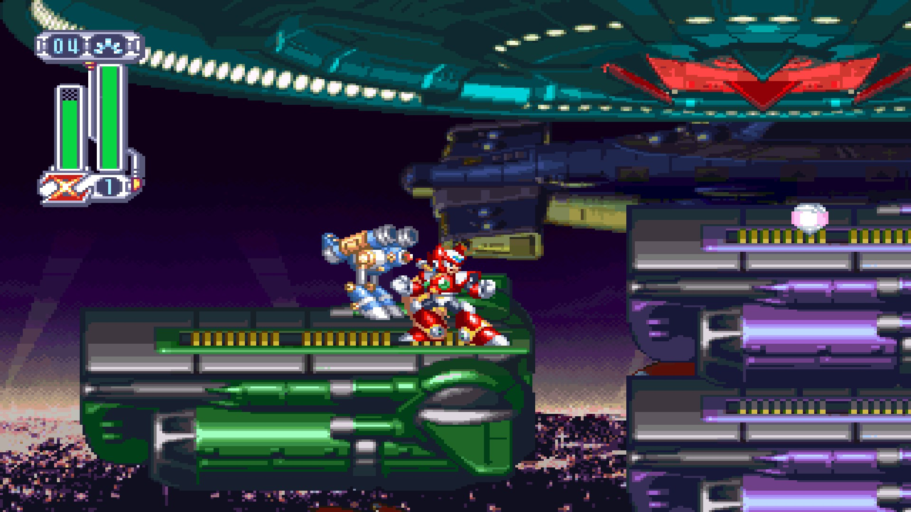
O ato 2 é extremamente curto, apenas use sua Z-Saber para destruir os Lasers e atravesse a plataforma com espinhos. Haverá 1 laser que estará sobrevoando os espinhos, muito longe para acerta-lo com a Z-Saber. O destrua com a Rakuhouha, atravesse a plataforma e chegue na sala de um mini-chefe. Não há muito segredo, use a Ryuuenjin no vermelho na parede quando ele estiver aberto, enquando destroi os lasers que aparecerem no chão mirando em você, os lasers ao meio e ao alto você pode ignorar. Derrotando o olho vermelho, suba as escadas e encare o verdadeiro chefe da fase, Storm Owl. Aqui também não tem muito segredo, use os tiros da Rakuhouha para destrui-lo. Apesar da Rakuhouha só ter uma carga de 4 tiros, diferente de X, Zero é capaz de re-carregar sua munição especial apenas por bater em inimigos. Caso a carga da Rakuhouha acabe, fique batendo em Storm Owl até carregar uma carga, e o ataque. Apenas não deixe que ele o agarre pela cabeça, pois assim ele te jogará no chão e dará um dano maior que os de Colonel. Derrotando Storm Owl, Zero ganhara a melhoria Tenkuuha para sua Z-Saber. Sua lamina verde passará a ficar roxa, agora a Z-Saber tem um ataque basico maior, ficando bem mais poderosa.
Jungle - Web Spider
Aqui não há muito segredo, apenas prossiga pela fase destruindo os inimigos com sua Z-Saber, apenas os robôs azuis são mais poderosos, e tome cuidado ao
pular os troncos das cachoeiras, para pular no ultimo tronco da segunda cachoeira é necessario usar o dash. No ato 2, você vai encontrar alguns inimigos complicados de
derrotar que não tinham no ato 1. Algumas teias eletricas vão estar espalhadas no mapa bloqueando seu caminho, destrua as 2 aranhas nelas e atravesse antes que elas
voltem. Também haverão algumas colmeias no mapa, use a Ryuuenjin e as destrua, não mate as abelhas uma por uma, enquanto a colmeia estiver funcionando, mais abelhas
spawnam. E fiquem atentos as lagartas que aparecem do nada em sua tela saindo de locais escondidos. Quando chegar na area das arvores, quando encontrar o segundo pedaço
de tronco seco no mapa, use a Ryuuenjin nela, o tronco vai queimar e revelar um Heart Tank
 . Continue o final da fase e chegue a area do boss.
. Continue o final da fase e chegue a area do boss.
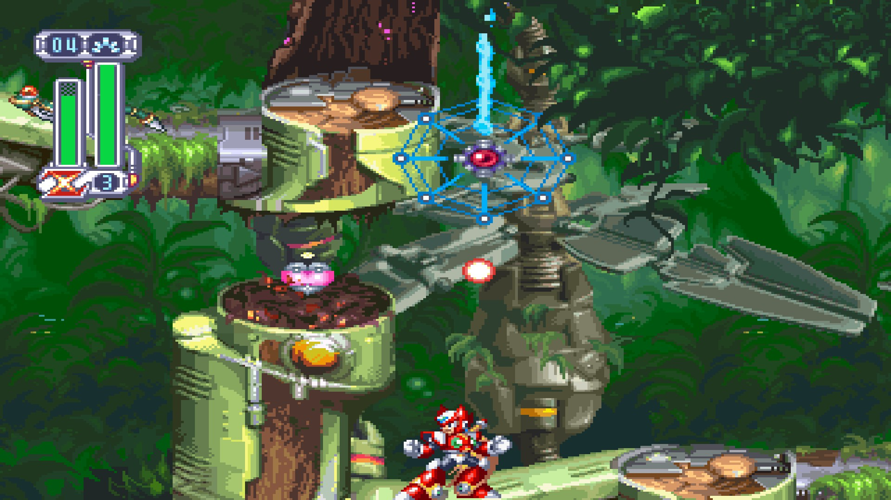
Chegando na Web Spider, simplesmente ataque-a com golpes comuns da sua Z-Saber, enquanto use (e abuse) dos dashs para desviar das teias eletricas que ela atira em você, faça isso até ela perder metade do HP e começar a segunda fase da luta. Quando ela ficar presa em suas teias eletricas, caso ela abra uma especie de tampa em suas costas, use a Ryuuenjin para ataca-la e destruir as mini aranhas que ela lançar, se ela ficar parada mas não abrir a tampa, ela vai jogar uma teia eletrica em você, desvie e ataque com a Z-Saber normal Derrotando ela, Zero ganhará a Raijingeki, um upgrade eletrico para sua Z-Saber. Para usa-lo basta apertar o botão de arma especial, sem nenhum direcional.
Biolaboratory - Split Mushroom
Nessa fase você precisará subir uma enorme escadaria inicial, e em seguida varias escadas ou paredes estreitas, enquando alguns inimigos te seguem ou atiram em você. Aqui é recomendavel simplesmente se esquivar os inimigos e continuar em frente, ao inves de perder tempo atirando neles. Foque em matar apenas as flores amarelas nas paredes, pois elas conseguem te acertar a uma enorme distancia, porem, mesmo nas escadas Zero pode usar sua Z-Saber, então é recomendavel usar as escadas para atacar um inimigo perto delas na plataforma a cima. Siga em frente desviando dos inimigos subindo, até chegar numa plataforma acima de varios espinhos e enfrentar um mini-boss. Da direita para a esquerda, fique parado em cima da plataforma, quando o boss for subir, vá para a plataforma à esquerda, e ataque o maximo que conseguir e repita o processo. Quando sobrar apenas uma plataforma no chão, suba na plataforma no ar e deixe o boss quebrar ela, caia na ultima plataforma a baixo e use a Ryuuenjin. Conseguindo atacar o suficiente, o inimigo vai morrer no golpe da Ryuuenjin e os espinhos abaixo vão desaparecer, assim você pode prosseguir.
No ato 2, saindo da escaradia em espiral, você verá um Heart Tank  em cima da plataforma que você está. Pule no ar onde fica o limbo e volte, para que o inimigo caia, após isso, na ponta da plataforma, use a Ryuuenjin para subir e tente agarrar a parede. Para dar
certo, a Ryuuenjin tem que jogar Zero para bem proximo da parede, é um processo dificil. Caso não consiga, ignore o Heart Tank por hora e apenas continue a fase, logo conseguiremos um item que
vai facilitar de pega-lo.
em cima da plataforma que você está. Pule no ar onde fica o limbo e volte, para que o inimigo caia, após isso, na ponta da plataforma, use a Ryuuenjin para subir e tente agarrar a parede. Para dar
certo, a Ryuuenjin tem que jogar Zero para bem proximo da parede, é um processo dificil. Caso não consiga, ignore o Heart Tank por hora e apenas continue a fase, logo conseguiremos um item que
vai facilitar de pega-lo.
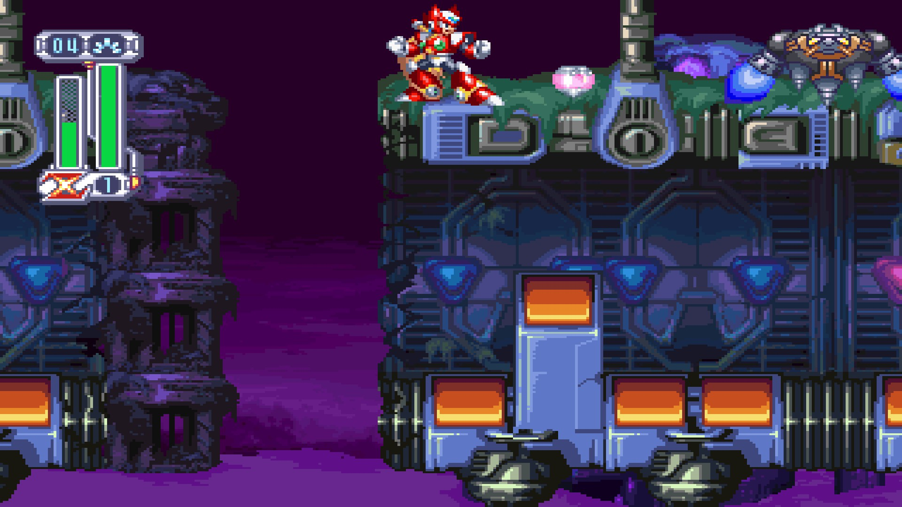
Suba o elevador destruindo os inimigos e não seja esmagado, use o Dash para te auxiliar. Chegando no topo, você vai encontrar um item para curar o HP e encher sua
munição. Pegue-os e entre na sala do boss. Quando
Military Train - Slash Beast
Essa fase é um tipico jogo plataforma dos anos 80, apenas vá pulando os obstaculos e buracos enquanto derrota os inimigos para chegar ao final da fase, apesar da massiva quantidade de inimigos, eles são bem fracos, são uma otima farm para encher os tanques de arma e energia (que você vai precisar muito daqui por diante). Apenas tome cuidado com os canhões de laser, eles tem muita vida e causam muito dano. Chegando ao final da fase, temos um mini-boss, um robô com 3 espinhos e uma pequena maquina que atira. Pule até perto do robô e ataque massivamente o espinho de baixo com sua Z-Saber, no processo você levará dano, mas apenas ignore. Com o espinho de baixo destruido, apenas spamme sua Ryuuenjin e termine de quebrar a maquina.
Por conta da presença de soldados com armaduras, o ato 2 se torna mais dificil no começo, mas apos passar por 3 soldados,
você encontra uma armadura vazia e pode equipa-la. Ja dentro da armadura, apenas ignore os inimigos e saia correndo o mais rapido que pode,
no topo de um dos vagões tem um Heart Tank  ,
pegue-o antes que o vagão exploda, ande com o robô até chegar numa area que ele não consegue pular, saia dele com o direcional para cima e
pulo e continue o final da fase, tome cuidado com os buracos, alguns inimigos voadores podem acerta-lo.
,
pegue-o antes que o vagão exploda, ande com o robô até chegar numa area que ele não consegue pular, saia dele com o direcional para cima e
pulo e continue o final da fase, tome cuidado com os buracos, alguns inimigos voadores podem acerta-lo.
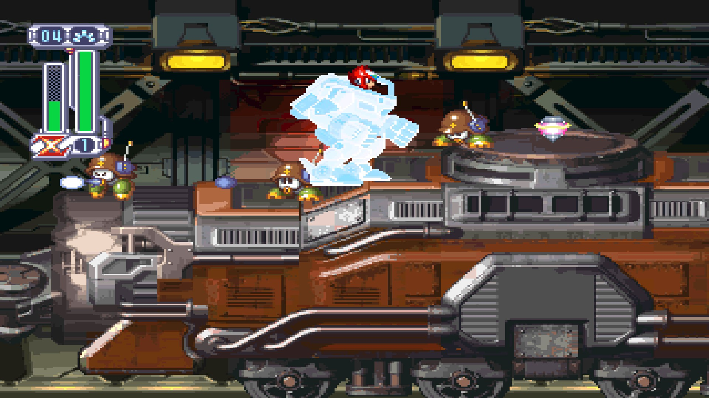
Chegando no boss Slash Beast, tome cuidado. Com X, ele é o inimigo mais facil de se derrotar, mas com Zero, ele é bem mais complicado, ja que, ele não tem uma fraqueza. Quando ele der o primeiro ataque por cima, use o dash e desvie dele, em seguida o ataque com golpes comuns da Z-Saber, ou o golpe giratorio no ar. Quando ele disparar rajadas verdes, use o Dash para desviar por baixo, caso ele mostre 1 brilho vermelho, pule por cima dele quando ele der dash para cima de você, ele fará isso duas vezes. Se ele mostrar 2 brilho vermelhos, suba em uma parede até que ele a cabeceie. Derrota-lo pode levar tempo, e eu recomendo que use um Energy Tank caso sinta que for necessario, essa ultima luta pode ser dificil para novatos. Quando finalmente derrota-lo, Zero conseguirá a Shippuga, essa habilidade fará Zero dar um golpe poderoso caso ataque logo após utilizar um dash rasteiro.
Ultimos itens
Antes de irmos para a Space Port, vamos retornar nas fases anteriores e pegar os ultimos itens que não pegamos ainda. Caso ainda não tenha pego o Heart Tank na fase de Split Mushroom com o Double Jump, agora é a hora.
Na fase do Magma Dragoon, vamos pegar o ultimo Heart Tank  ,
no ato 2. Na plataforma onde você derrota o primeiro soldado de armadura, use o Double Jump e suba nela e pegue seu Heart Tank
,
no ato 2. Na plataforma onde você derrota o primeiro soldado de armadura, use o Double Jump e suba nela e pegue seu Heart Tank
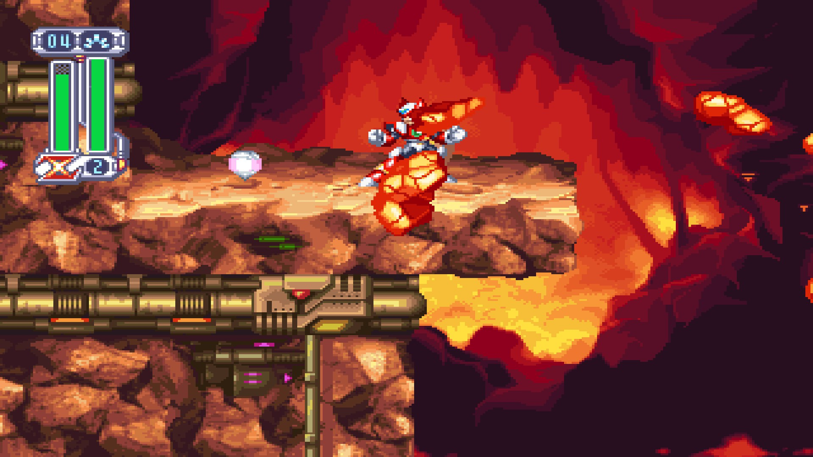
Agora retorne a fase de Frost Walrus para pegarmos o ultimo item. Na parte onde você corre por um caminho de gelo antes que ele quebre e você caia nos espinhos, se agarre na parede, suba nela e use o Double Jump para subir na plataforma e pegar o item. Esse item fará seu numero de vidas inicial (quando você inicia o jogo ou recebe um game over) subir de 2 para 4.
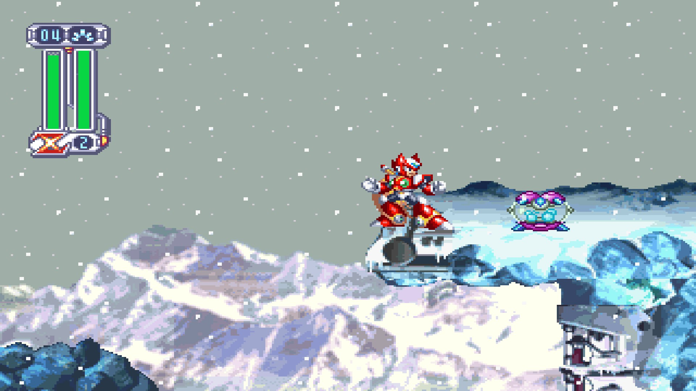
Caso tenha pego todos os itens, seu save estará com os seguintes itens abaixo. Caso esteja faltando algum, volte no detonado e procure pelo(s) item(s) restante(s).
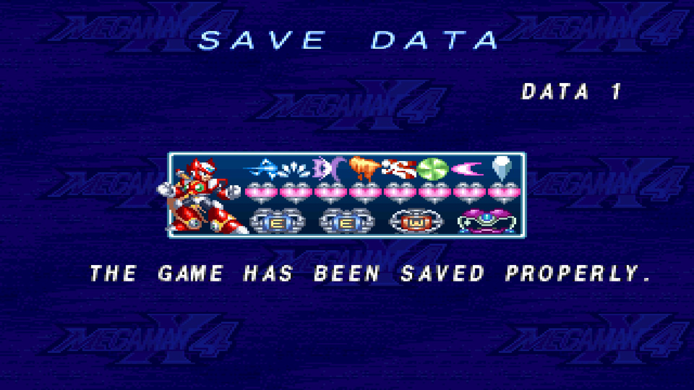
Space Port
Se você chegou até aqui, passar por essa fase é fichinha, apenas use a Z-Saber e destrua os inimigos enquanto avança. No final da fase você entrará numa sala de boss battle, re-encontrando Colonel para terminar aquela luta que foi interrompida anteriormente.
Colonel - Luta 2
Colonel o ataca com diversos tipos de golpes, como se teleportar para sua frente e ataca-lo com a espada, lançar 3 rajadas verdes em sua direção, rajadas eletricas verticais e um mega corte de energia horizontal. O melhor jeito de derrota-lo, é usar a parede e ficar no alto para desviar de seus ataques e cair no chão para ataca-lo, pois a rajada eletrica é o unico movimento dele que consegue te acertar se você estiver encostado ao alto da parede. Caso ele jogue a rajada, caia no chão onde a rajada não o atinge, de preferencia ao lado de Colonel, e o ataque, em seguida de um dash para desviar da investida dele. Colonel não toma dano para as habilidades elementares da Z-Saber, apenas os golpes fisicos. Kuuenbu é o que mais causa dano a ele, então sempre que possivel, pule e ataque com o corte giratorio. Se você tiver dificuldades, volte para o menu e farme HP para seus Energy Tanks, com um pouco de persistencia e treino, você consegue derrota-lo.
Final Weapon Act 1 - Iris
Antes de entrar na final Weapon, eu recomendo que volte em alguma fase anterior (Web Spider ou Slash Beast), e encha seus 2 Energy Tanks. Essa fase é extremamente curta, apesar de ter os robôs que atiram um laser forte e o robô grande com muita vida, apenas os destrua e siga em frente até a sala, mesmo que chegue sem muito HP, morra propositalmente e re-comece a luta com o HP cheio. Sua luta será justamente contra Iris, que quer vingança por Zero ter destruido seu irmão. Mesmo hesitante, Zero então encara Iris. Ela se protegerá com uma armadura robotica, assim que a luta começar, ataque-a o maximo que puder (mas a cada hit sofrido, ela lançara mini-robos para atrapalha-lo), que após uns golpes, um cristal roxo vai aparecer. Atacar o cristal roxo é a unica maneira de causar dano a Iris, use a Ryuuenjin para alcança-lo e causar dano. Tanto a armadura robotica quando o cristal vao soltar alguns lasers, use a parede para desviar deles e depois volte a atacar. Caso ache necessario, use um dos Energy Tanks, mas guarde o outro. Ao derrotar Iris, uma cutscene onde Zero vai até seu corpo caido começa, assim ele ouve suas ultimas palavras, até que ela eventualmente morre. Em desespero e sem saber porque tudo isso teve que acontecer, Zero fala sua famosa frase, "What i'm fighing for?!", onde ele enfim se questiona se o fato de simplesmente seguir ordens superiores sem hesitar, é de fato ou não o certo a se fazer. Mas mesmo arrependido, Zero segue em frente, a essa altura não há mais como voltar atrás.
Final Weapon Act 2 - General
O segundo ato da Final Weapon segue o mesmo estilo do primeiro ato, porem, a fase é um pouco mais longa e desafiadora, com inimigos posicionados em locais estrategicos e espinhos para você morrer com 1 Hit. Prossiga com cuidado e segue na sala do proximo boss, General. Com Zer, essa luta é um saco. General só toma dano em sua cabeça, suba no alto da parede e espere ele vir para cima de você, use o Dash aereo para passar por cima dele, e ainda no ar, use o analogico para voltar um pouco e o ataque com a Kuuenbu, ao pousar no chão, ja corra para a parede oposta. Caso ele ejete suas mãos, apenas fique no chao e desvie das esferas, espere para que ele volte a ataca-lo com uma investida com o corpo (mas isso pode demorar, General tem mais chances de ejetar suas mãos do que usar a investida), por isso, essa luta vai demorar muito, sendo preciso muita paciencia (e talvez um Energy Tank) para conclui-la. Se General atirar uns raios azuis, desvie subindo o mais alto que puder na parede. Após MUITO tempo, ele eventualmente será derrotado. Caso tome game-over e re-comece o jogo, você voltará na Final Weapon 2, mas caso saia do jogo, quando retornar, precisará derrotar Iris novamente. o derrotar General, você terá uma conversa com ele e algo acontecerá na nave da Final Weapon, assim Zero e General farão uma tregua e saem para investigar.
Boss Rush
Atravesse a area sem nenhum inimigo na Final Weapon e caia no buraco. Lá você encontrará 8 portais vermelhos e 1 amarelo. Cada portal vermelho é uma copia levemente inferior dos 8 bosses de fases que enfrentamos anteriormente, como Zero agora está mais forte e com todas as armas, derrota-los não é muito dificil, e a cada boss derrotado terá um item para recuperar vida no cenario. Apenas repita a mesma tatica feita anteriormente para mata-los, tendo como diferença apenas o Magma Dragoon, visto que a armadura robotica não está aqui, use a Raijingeki para ataca-lo. Enfrente os bosses na ordem que quiser, isso não fará diferença.
Sigma
Como de costume, Sigma está por trás de tudo, e agora chegou a hora de derrota-lo. Antes da luta começar, Sigma lhe contará a verdade por trás do motivo dele ter se rebelado como um Maverick, sendo por culpa total de Zero, o qual despertou da capsula de Dr.Wille de forma descontrolada e começou a destruir todos os Reploids que visse. Sigma, que na epoca não só era do bem, mas era o Lider dos Maverick Hunters, decide ir atrás do Maverick Vermelho e derrota-lo, mas nessa luta, Sigma é infectado por Zero com um virus, que eventualmente o faz trocar de lado. Zero que teria sido destruido por Sigma antes do Virus fazer efeito, foi reconstruido como um Reploid e com seu virus aparentemente removido, pois era muito forte e seria uma otima adição aos Maverick Hunters. Após a conversa, a batalha contra Sigma se inicia. Ela possui 3 atos, e sempre que você morrer, terá que voltar a partir do primeiro ato. Caso feche o jogo, você terá que derrotar os 8 bosses novamente. O primeiro ato é completamente simples, equipe a Ryuuenjin e ataque ele. Sempre a cada 3 ataques, ele pegará sua foice e fara uma investida por baixo, entao siga esse esquema: O ataque 2 vezes com a Ryuuenjin, suba na parede e use um dash para se esquivar dele e da foice no terceiro ataque. Repita o processo até derrota-lo.
No segundo ato, ele retira seu cosplay de dona morte e vem com tudo para cima de você. Desvie da foice giratoria e o acerte com a Z-Saber. Quando ele invocar eletricidade e os lasers, use o double jump para pular na parede atrás dele e espere os lasers acabarem. Pode levar algumas tentativas até derrota-lo, mas eventualmente você passará sem tomar muito dano.
Agora chega o chefe mais dificil desse jogo, e ja aviso de antemão, você vai precisar de muitas tentativas para conseguir derrota-lo, então tente chegar nesse terceiro ato com os 2 Energy Tanks cheios, sem gasta-los nas fases anteriores, você vai precisar. Aqui tecnicamente existem 2 sigmas, o ''Sigma cabeção'' e o ''Sigma atirador''. Contra contra o Sigma cabeção acerte-o o maximo que puder com a Z-Saber, e quando ele usar o vendaval use o dash na direção contrária para escapar dos espinhos. Quando as 3 cabeças coloridas aparecerem, use a Ryuuenjin para estrategicamente destruir algumas delas e conseguir uma area livre onde você não sofrerá dano, e contra o sigma atirador fique de baixo dele e também o ataque com a Ryuuenjin. Desejo boa sorte para qualquer um que chegou até aqui, derrote-o e enfim zere o jogo usando o Zero.